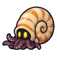

หาดซากแอมโมไนต์
ดูบนแผนที่และวิธีไป วางแผนฟาร์ม
ชั้นล่างในที่ราบสูง · Lv 88–98
ชั้นล่าง / ดันเจี้ยน
มอนในแมพ (9)
| มอน | Lv | ธาตุ | โซน |
|---|---|---|---|
| 88–96 | ลม | เปลือกหอยยักษ์ | |
| 90–98 | ดิน | เปลือกหอยยักษ์ | |
| 90–98 | ดิน | เปลือกหอยยักษ์ | |
 แอมโมไนต์คลาน | 88–98 | น้ำ | เปลือกหอยยักษ์ |
| 88–96 | ดิน | เปลือกหอยยักษ์ | |
| แอมโมไนต์คลาน · ร่างลายม่วง | 90–98 | น้ำ | |
| 90–98 | น้ำ | เปลือกหอยยักษ์ | |
| 90–98 | ดิน | เปลือกหอยยักษ์ | |
| 99–99 | ดิน |
อุปกรณ์ที่ดรอปในแมพนี้
| ของ | โอกาสสูงสุด |
|---|---|
| 0.5% | |
| 0.25% | |
| 0.25% | |
| 0.25% | |
| 0.25% | |
| 0.25% | |
| 0.25% | |
| 0.25% | |
| เกราะมังกรไพร | 0.15% |
| เกราะเต่าโบราณ | 0.15% |
| ชุดนกไฟอมตะ | 0.15% |
| ชุดพายุสายฟ้า | 0.15% |
| ชุดแมงมุมไหม | 0.15% |
| ชุดเงาหมอก | 0.15% |
| ชุดผู้รักษาเวลา | 0.15% |